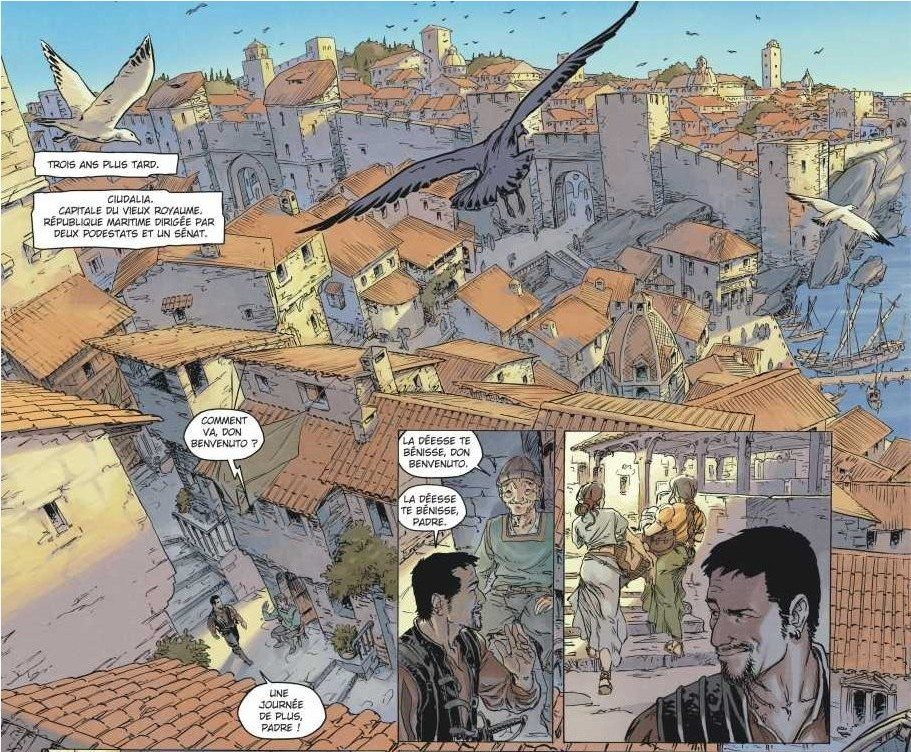

Ciudalia

« Les moralistes qui affirment que l'homme d'État doit être le serviteur de sa nation n'ont rien compris au gouvernement. Gouverner n'est pas un ministère ; voilà bien une idée pour le clergé, un vœu pieux qui peut mener à de dangereuses dérives. La vérité est plus simple : gouverner, c'est comme coucher. Si les deux partenaires aiment ça, ils se confondent. Ils partagent tout. J'ai une connaissance intime de la république. Je sais tout de ses faiblesses : la vanité, la coquetterie artistique, l'affairisme, le clientélisme, la corruption, le populisme, le chauvinisme, la calomnie… Sans oublier le mépris, bien sûr. Autant de petits travers qu'il suffit de flatter pour circonvenir les élites, pour faire brailler la plèbe dans la rue, pour faire crier la république tout entière comme une courtisane. Je baise la république, et je la baise bien. J'ai cerné l'essence même de Ciudalia, et c'est la raison pour laquelle Ciudalia m'aime. Ce qui fait la grandeur de Leonide Ducatore fait la grandeur de Ciudalia. Dès lors, pourquoi me priverais-je de jouir de l'État ? Je le sers en me servant. »
— Jean-Philippe Jaworski, Gagner la guerre
- La République de Ciudalia, cité des Princes Marchands, au nord-est, sur la côte de la mer Erridienne.
- Indépendante depuis 682 CR. Gouvernée par un Sénat.
- Patrie de Spada Rapazzoni et du sénateur Guido Rapazzoni.
- A signé avec Ressine des accords commerciaux renforcés : les deux cités, hier rivales, se disputent désormais le prix du sel et de la laine.